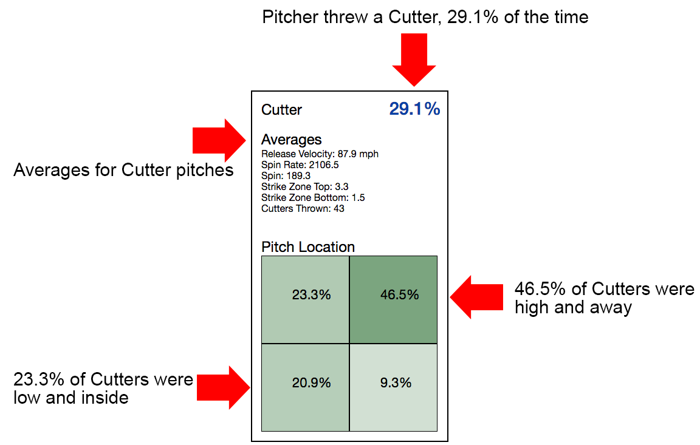

The following application uses a pitcher's previous stats to give the batter knowledge of what pitch to expect given his current situation. The location zone is separated into 4 sections showing if the pitch will be outside/inside and high/low. Choosing the batter's hand filter is important as it will determine inside/outside pitches.

CHOOSE YOUR SITUATIONAL FILTERS AND CLICK SUBMIT TO SEE THE RESULTS